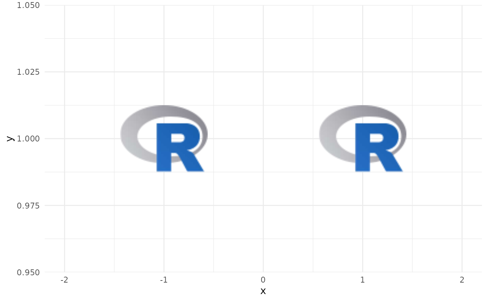
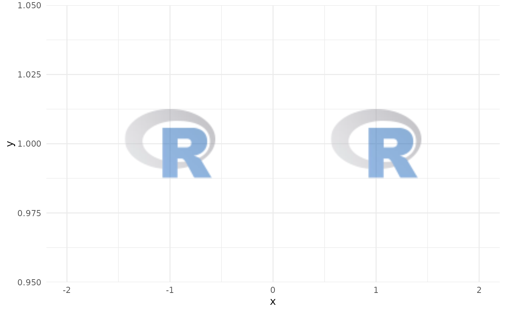
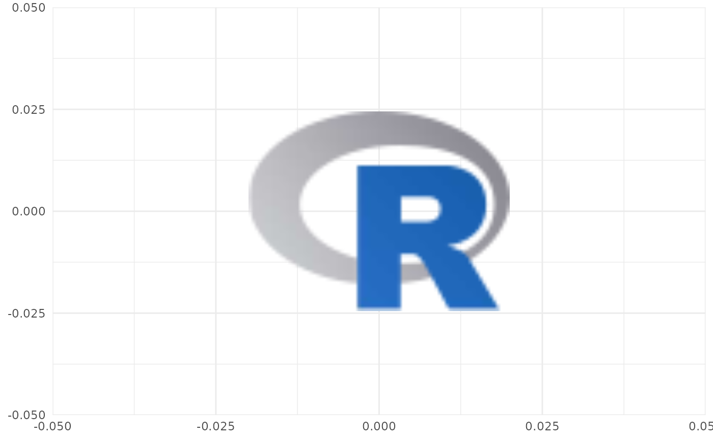

ggplot2 Layer for Visualizing Images from URLs or Local Paths
Source:R/geom_from_path.R
geom_from_path.RdThis geom is used to plot images instead of points in a ggplot. It requires x, y aesthetics as well as a path.
Usage
geom_from_path(
mapping = NULL,
data = NULL,
stat = "identity",
position = "identity",
...,
na.rm = FALSE,
show.legend = FALSE,
inherit.aes = TRUE
)Arguments
- mapping
Set of aesthetic mappings created by
aes(). If specified andinherit.aes = TRUE(the default), it is combined with the default mapping at the top level of the plot. You must supplymappingif there is no plot mapping.- data
The data to be displayed in this layer. There are three options:
If
NULL, the default, the data is inherited from the plot data as specified in the call toggplot().A
data.frame, or other object, will override the plot data. All objects will be fortified to produce a data frame. Seefortify()for which variables will be created.A
functionwill be called with a single argument, the plot data. The return value must be adata.frame, and will be used as the layer data. Afunctioncan be created from aformula(e.g.~ head(.x, 10)).- stat
The statistical transformation to use on the data for this layer. When using a
geom_*()function to construct a layer, thestatargument can be used to override the default coupling between geoms and stats. Thestatargument accepts the following:A
Statggproto subclass, for exampleStatCount.A string naming the stat. To give the stat as a string, strip the function name of the
stat_prefix. For example, to usestat_count(), give the stat as"count".For more information and other ways to specify the stat, see the layer stat documentation.
- position
A position adjustment to use on the data for this layer. This can be used in various ways, including to prevent overplotting and improving the display. The
positionargument accepts the following:The result of calling a position function, such as
position_jitter(). This method allows for passing extra arguments to the position.A string naming the position adjustment. To give the position as a string, strip the function name of the
position_prefix. For example, to useposition_jitter(), give the position as"jitter".For more information and other ways to specify the position, see the layer position documentation.
- ...
Other arguments passed on to
ggplot2::layer(). These are often aesthetics, used to set an aesthetic to a fixed value. See the below section "Aesthetics" for a full list of possible arguments.- na.rm
If
FALSE, the default, missing values are removed with a warning. IfTRUE, missing values are silently removed.- show.legend
logical. Should this layer be included in the legends?
NA, the default, includes if any aesthetics are mapped.FALSEnever includes, andTRUEalways includes. It can also be a named logical vector to finely select the aesthetics to display. To include legend keys for all levels, even when no data exists, useTRUE. IfNA, all levels are shown in legend, but unobserved levels are omitted.- inherit.aes
If
FALSE, overrides the default aesthetics, rather than combining with them. This is most useful for helper functions that define both data and aesthetics and shouldn't inherit behaviour from the default plot specification, e.g.annotation_borders().
Value
A ggplot2 layer (ggplot2::layer()) that can be added to a plot
created with ggplot2::ggplot().
Aesthetics
geom_from_path() understands the following aesthetics (required aesthetics have no default value):
xThe x-coordinate. Required.
yThe y-coordinate. Required.
patha file path, url, raster object or bitmap array. See
magick::image_read()for further information. Required.alpha = NULLThe alpha channel, i.e. transparency level, as a numerical value between 0 and 1.
colour = NULLThe image will be colorized with this colour. Use the special character
"b/w"to set it to black and white. For more information on valid colour names in ggplot2 see https://ggplot2.tidyverse.org/articles/ggplot2-specs.html?q=colour#colour-and-fillangle = 0The angle of the image as a numerical value between 0° and 360°.
hjust = 0.5The horizontal adjustment relative to the given x coordinate. Must be a numerical value between 0 and 1.
vjust = 0.5The vertical adjustment relative to the given y coordinate. Must be a numerical value between 0 and 1.
width = 1.0The desired width of the image in
npc(Normalised Parent Coordinates). The default value is set to 1.0 which is big but it is necessary because all used values are computed relative to the default. A typical size iswidth = 0.1(see below examples).height = 1.0The desired height of the image in
npc(Normalised Parent Coordinates). The default value is set to 1.0 which is big but it is necessary because all used values are computed relative to the default. A typical size isheight = 0.1(see below examples).
Examples
library(ggplot2)
library(ggpath)
# compute path of an R logo file shipped with ggpath
local_image_path <- system.file("r_logo.png", package = "ggpath")
# create dataframe with x-y-coordinates and the above local path
plot_data <- data.frame(x = c(-1, 1), y = 1, path = local_image_path)
# plot images directly from local path
ggplot(plot_data, aes(x = x, y = y)) +
geom_from_path(aes(path = path), width = 0.2) +
coord_cartesian(xlim = c(-2, 2)) +
theme_minimal()

# plot images directly from local path and apply transparency
ggplot(plot_data, aes(x = x, y = y)) +
geom_from_path(aes(path = path), width = 0.2, alpha = 0.5) +
coord_cartesian(xlim = c(-2, 2)) +
theme_minimal()

# It is also possible and recommended to use the underlying Geom inside a
# ggplot2 annotation
ggplot() +
annotate(
ggpath::GeomFromPath,
x = 0,
y = 0,
path = local_image_path,
width = 0.4
) +
theme_minimal()
